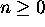
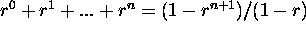
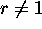
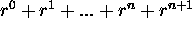
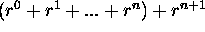
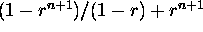
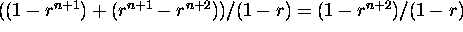

Induction
Problem: If r is a real number not equal to 1, then for every  ,
 .
Proof:
Basis Step: If n = 0,
then LHS = r0 = 1,
and RHS = (1 - r) / (1 - r) = 1, since  . Hence
LHS = RHS.
Induction: Assume that . --------
Induction Hypothesis
To prove this for n+1, first try to express LHS for
n+1 in terms of LHS
for n, and somehow use the induction hypothesis.
Here let us try
LHS for n + 1 =  =
 .
Using the induction hypothesis, the last expression can be rewritten as  .
Taking the common denominator, it is equal to
 ,
which is equal to the RHS for n+1.
Thus LHS = RHS for n+1.
End of Proof.